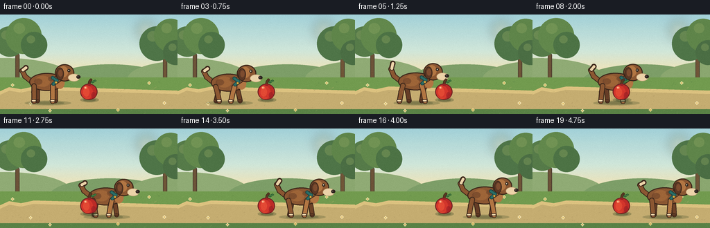
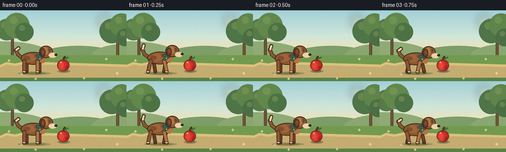
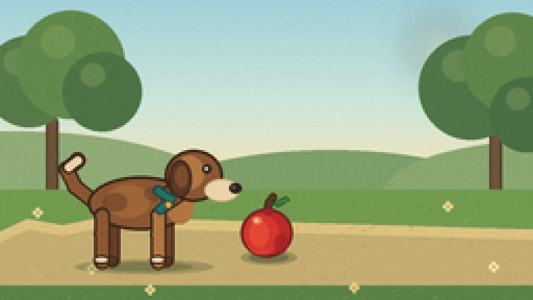
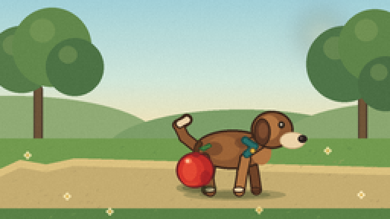
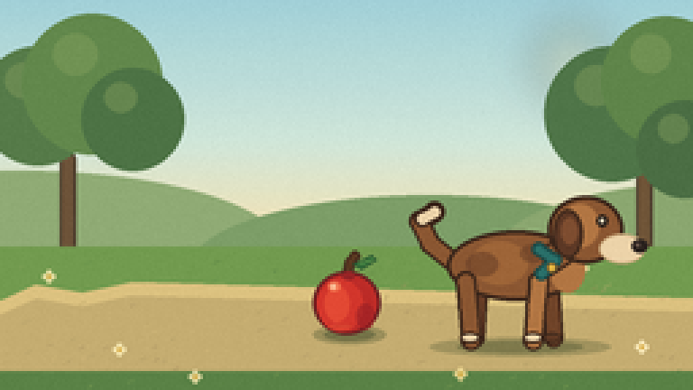
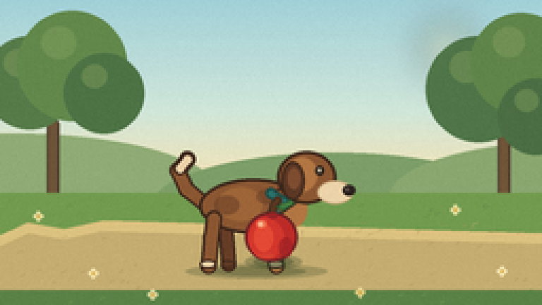

CODING AGENTS AS PIXEL WORLD MODELS
traex/DeepSeek-V4.1-Flash · instance_preservation_0002
点击播放 · 原生 RGB 像素
逐轮保存的候选
回放视频、检查图与代码变化。
每份候选均可单独播放。实际图片检查记录在下方工具轨迹中。
候选 01播放与检查图
点击播放 · 原生 RGB 像素


展开代码变化
--- 上一保存版本
+++ 本次保存版本
@@ -0,0 +1,343 @@
+from __future__ import annotations
+
+import math
+import random
+from pathlib import Path
+
+import numpy as np
+from PIL import Image, ImageDraw, ImageFilter
+
+from artifact_io import save
+
+
+WIDTH = 256
+HEIGHT = 144
+FRAMES = 20
+FPS = 4.0
+SCALE = 4
+
+
+def mix(a: tuple[int, int, int], b: tuple[int, int, int], t: float) -> tuple[int, int, int]:
+ return tuple(round(a[i] * (1.0 - t) + b[i] * t) for i in range(3))
+
+
+def vertical_gradient(size: tuple[int, int], stops: list[tuple[float, tuple[int, int, int]]]) -> Image.Image:
+ width, height = size
+ y = np.linspace(0.0, 1.0, height, dtype=np.float32)
+ pixels = np.empty((height, width, 3), dtype=np.uint8)
+ for row in range(height):
+ value = y[row]
+ for index in range(len(stops) - 1):
+ start_t, start_color = stops[index]
+ end_t, end_color = stops[index + 1]
+ if start_t <= value <= end_t:
+ local_t = (float(value) - start_t) / max(1e-6, end_t - start_t)
+ pixels[row, :, :] = mix(start_color, end_color, local_t)
+ break
+ else:
+ pixels[row, :, :] = stops[-1][1]
+ return Image.fromarray(pixels, "RGB")
+
+
+def rounded_line(draw: ImageDraw.ImageDraw, points: list[tuple[float, float]], width: float, fill, outline=None) -> None:
+ pts = [(round(x * SCALE), round(y * SCALE)) for x, y in points]
+ line_width = max(1, round(width * SCALE))
+ if outline is not None:
+ draw.line(pts, fill=outline, width=line_width + round(2.2 * SCALE), joint="curve")
+ radius = (line_width + round(2.2 * SCALE)) / 2
+ for x, y in pts:
+ draw.ellipse((x - radius, y - radius, x + radius, y + radius), fill=outline)
+ draw.line(pts, fill=fill, width=line_width, joint="curve")
+ radius = line_width / 2
+ for x, y in pts:
+ draw.ellipse((x - radius, y - radius, x + radius, y + radius), fill=fill)
+
+
+def ellipse(draw: ImageDraw.ImageDraw, box: tuple[float, float, float, float], fill, outline=None, width=1) -> None:
+ scaled = tuple(round(v * SCALE) for v in box)
+ draw.ellipse(scaled, fill=fill, outline=outline, width=round(width * SCALE))
+
+
+def polygon(draw: ImageDraw.ImageDraw, points: list[tuple[float, float]], fill, outline=None, width=1) -> None:
+ scaled = [(round(x * SCALE), round(y * SCALE)) for x, y in points]
+ draw.polygon(scaled, fill=fill, outline=outline, width=round(width * SCALE))
+
+
+def draw_background() -> Image.Image:
+ size = (WIDTH * SCALE, HEIGHT * SCALE)
+ image = vertical_gradient(
+ size,
+ [
+ (0.00, (157, 207, 219)),
+ (0.36, (205, 230, 220)),
+ (0.62, (246, 226, 177)),
+ (0.66, (236, 210, 151)),
+ (1.00, (111, 151, 77)),
+ ],
+ )
+ draw = ImageDraw.Draw(image, "RGBA")
+
+ # Soft sun and atmospheric haze.
+ sun = Image.new("RGBA", size, (0, 0, 0, 0))
+ sun_draw = ImageDraw.Draw(sun, "RGBA")
+ sun_draw.ellipse(
+ (198 * SCALE, 10 * SCALE, 224 * SCALE, 36 * SCALE),
+ fill=(255, 238, 170, 90),
+ )
+ sun = sun.filter(ImageFilter.GaussianBlur(8 * SCALE))
+ image.alpha_composite(sun) if image.mode == "RGBA" else image.paste(Image.alpha_composite(image.convert("RGBA"), sun).convert("RGB"))
+ draw = ImageDraw.Draw(image, "RGBA")
+
+ # Layered hills, kept quiet behind the two important objects.
+ draw.ellipse((-90 * SCALE, 63 * SCALE, 105 * SCALE, 123 * SCALE), fill=(139, 168, 115, 255))
+ draw.ellipse((70 * SCALE, 72 * SCALE, 247 * SCALE, 126 * SCALE), fill=(119, 155, 101, 255))
+ draw.ellipse((184 * SCALE, 67 * SCALE, 350 * SCALE, 119 * SCALE), fill=(133, 164, 109, 255))
+
+ # Tree trunks and foliage frame the scene without crowding the actors.
+ rounded_line(draw, [(25, 93), (25, 59), (20, 43)], 4.0, (102, 76, 52), (72, 58, 43))
+ rounded_line(draw, [(238, 96), (238, 62), (243, 43)], 4.0, (105, 78, 51), (72, 58, 43))
+ foliage = [
+ (14, 39, 22, (78, 118, 68)),
+ (34, 31, 26, (90, 131, 72)),
+ (49, 44, 19, (68, 109, 64)),
+ (226, 42, 25, (70, 111, 67)),
+ (246, 30, 24, (87, 128, 70)),
+ (253, 55, 18, (66, 104, 63)),
+ ]
+ for cx, cy, radius, color in foliage:
+ draw.ellipse(
+ ((cx - radius) * SCALE, (cy - radius) * SCALE, (cx + radius) * SCALE, (cy + radius) * SCALE),
+ fill=(*color, 255),
+ )
+ draw.ellipse(
+ ((cx - radius * 0.55) * SCALE, (cy - radius * 0.72) * SCALE, (cx + radius * 0.08) * SCALE, (cy - radius * 0.12) * SCALE),
+ fill=(134, 162, 94, 95),
+ )
+
+ # Meadow floor and a narrow, light path.
+ draw.rectangle((0, 91 * SCALE, WIDTH * SCALE, HEIGHT * SCALE), fill=(107, 151, 75, 255))
+ draw.polygon(
+ [
+ (0, 111 * SCALE),
+ (52, 105 * SCALE),
+ (121, 108 * SCALE),
+ (196, 104 * SCALE),
+ (256 * SCALE, 110 * SCALE),
+ (256 * SCALE, 137 * SCALE),
+ (0, 137 * SCALE),
+ ],
+ fill=(194, 170, 111, 255),
+ )
+ draw.polygon(
+ [
+ (0, 111 * SCALE),
+ (52, 105 * SCALE),
+ (121, 108 * SCALE),
+ (196, 104 * SCALE),
+ (256 * SCALE, 110 * SCALE),
+ (256 * SCALE, 115 * SCALE),
+ (192, 109 * SCALE),
+ (120, 113 * SCALE),
+ (53, 110 * SCALE),
+ (0, 116 * SCALE),
+ ],
+ fill=(218, 192, 126, 255),
+ )
+ draw.rectangle((0, 137 * SCALE, WIDTH * SCALE, HEIGHT * SCALE), fill=(82, 125, 65, 255))
+
+ rng = random.Random(14)
+ for _ in range(115):
+ x = rng.uniform(2, 254)
+ y = rng.uniform(95, 143)
+ if 105 < y < 137:
+ color = rng.choice([(166, 145, 91, 105), (211, 187, 123, 95), (145, 126, 81, 85)])
+ else:
+ color = rng.choice([(64, 111, 56, 90), (136, 168, 91, 90), (83, 128, 61, 80)])
+ length = rng.uniform(1.0, 3.0)
+ draw.line(
+ (round(x * SCALE), round(y * SCALE), round((x + length) * SCALE), round((y - 1) * SCALE)),
+ fill=color,
+ width=round(0.75 * SCALE),
+ )
+
+ # Tiny meadow flowers add depth but remain away from the crossing zone.
+ for x, y, color in [
+ (18, 102, (246, 232, 174)),
+ (44, 129, (250, 237, 181)),
+ (215, 99, (246, 231, 171)),
+ (237, 128, (255, 241, 194)),
+ (170, 138, (244, 220, 147)),
+ (72, 139, (244, 230, 174)),
+ ]:
+ for dx, dy in [(-1.5, 0), (1.5, 0), (0, -1.5), (0, 1.5)]:
+ ellipse(draw, (x + dx - 1, y + dy - 1, x + dx + 1, y + dy + 1), (*color, 210))
+ ellipse(draw, (x - 0.7, y - 0.7, x + 0.7, y + 0.7), (218, 168, 58, 230))
+
+ # Gentle vignette and warm light from the upper right.
+ overlay = Image.new("RGBA", size, (0, 0, 0, 0))
+ odraw = ImageDraw.Draw(overlay, "RGBA")
+ odraw.rectangle((0, 0, WIDTH * SCALE, HEIGHT * SCALE), fill=(255, 229, 164, 12))
+ image = Image.alpha_composite(image.convert("RGBA"), overlay).convert("RGB")
+ return image
+
+
+def draw_shadow(draw: ImageDraw.ImageDraw, cx: float, y: float, width: float, opacity: int = 62) -> None:
+ ellipse(draw, (cx - width / 2, y - 3.5, cx + width / 2, y + 3.5), (50, 67, 35, opacity))
+ ellipse(draw, (cx - width * 0.35, y - 2.2, cx + width * 0.35, y + 2.2), (43, 61, 33, opacity + 12))
+
+
+def draw_dog(draw: ImageDraw.ImageDraw, cx: float, frame: int) -> None:
+ motion = math.sin(frame * 0.75)
+ step = frame * 0.74
+ bob = -0.9 + 0.9 * math.sin(step * math.tau)
+ ground = 125.5
+ body_y = 100.5 + bob
+
+ brown_dark = (79, 49, 31, 255)
+ brown_outline = (60, 39, 27, 255)
+ brown = (139, 87, 50, 255)
+ brown_light = (178, 118, 67, 255)
+ cream = (236, 211, 169, 255)
+ cream_shadow = (201, 169, 124, 255)
+ collar = (41, 111, 105, 255)
+
+ draw_shadow(draw, cx + 1, ground + 2.5, 67)
+
+ # Tail, wagging behind the body.
+ wag = 3.5 * math.sin(step * math.tau + 0.8)
+ tail = [
+ (cx - 22, body_y - 2),
+ (cx - 32, body_y - 10),
+ (cx - 36, body_y - 19 + wag * 0.25),
+ (cx - 32 + wag * 0.45, body_y - 25 + wag),
+ ]
+ rounded_line(draw, tail, 5.4, brown, brown_outline)
+ rounded_line(draw, [(cx - 35, body_y - 20 + wag * 0.25), (cx - 32 + wag * 0.45, body_y - 25 + wag)], 4.0, cream, brown_outline)
+
+ # Far legs move in counterphase and read as a second pair.
+ for base_x, phase, color in [(-14, math.pi, (102, 61, 38, 255)), (12, 0.0, (111, 67, 40, 255))]:
+ swing = 4.2 * math.sin(step * math.tau + phase)
+ knee_x = cx + base_x + swing * 0.45
+ foot_x = cx + base_x + swing
+ leg = [(cx + base_x, body_y + 5), (knee_x, body_y + 13), (foot_x, ground - 0.8)]
+ rounded_line(draw, leg, 5.0, color, brown_outline)
+ ellipse(draw, (foot_x - 3.8, ground - 2.8, foot_x + 2.8, ground + 1.0), (94, 57, 36, 255), brown_outline, 0.8)
+
+ # Main body and chest.
+ ellipse(draw, (cx - 26, body_y - 15, cx + 25, body_y + 11), brown, brown_outline, 1.4)
+ ellipse(draw, (cx + 12, body_y - 9, cx + 25, body_y + 8), brown_light, None)
+ ellipse(draw, (cx - 17, body_y - 11, cx + 4, body_y + 5), (158, 101, 56, 255), None)
+
+ # A couple of organic coat patches keep the silhouette readable.
+ ellipse(draw, (cx - 19, body_y - 7, cx - 7, body_y + 2), (105, 63, 39, 150), None)
+ ellipse(draw, (cx + 1, body_y - 10, cx + 11, body_y - 3), (101, 62, 38, 130), None)
+
+ # Forelegs.
+ for base_x, phase, color in [(-19, 0.0, brown), (8, math.pi, brown_light)]:
+ swing = 5.2 * math.sin(step * math.tau + phase)
+ knee_x = cx + base_x + swing * 0.5
+ foot_x = cx + base_x + swing
+ leg = [(cx + base_x, body_y + 4), (knee_x, body_y + 13), (foot_x, ground)]
+ rounded_line(draw, leg, 5.6, color, brown_outline)
+ ellipse(draw, (foot_x - 4.2, ground - 3.0, foot_x + 3.4, ground + 1.2), cream, brown_outline, 0.9)
+
+ # Neck and head, angled slightly forward.
+ head_x = cx + 25 + 0.6 * math.sin(step * math.tau)
+ head_y = body_y - 15 + 0.4 * math.sin(step * math.tau + 0.6)
+ polygon(
+ draw,
+ [(cx + 8, body_y - 9), (cx + 18, head_y + 2), (cx + 27, head_y + 7), (cx + 11, body_y + 3)],
+ brown,
+ brown_outline,
+ 1.2,
+ )
+ ellipse(draw, (head_x - 14, head_y - 13, head_x + 14, head_y + 12), brown, brown_outline, 1.4)
+ ellipse(draw, (head_x - 9, head_y - 10, head_x + 5, head_y + 6), brown_light, None)
+
+ # Floppy ear.
+ ellipse(draw, (head_x - 12, head_y - 8, head_x - 1, head_y + 10), (92, 56, 37, 255), brown_outline, 1.1)
+ ellipse(draw, (head_x - 9, head_y - 5, head_x - 3, head_y + 5), (126, 77, 48, 255), None)
+
+ # Muzzle, nose, eye, and collar.
+ ellipse(draw, (head_x + 5, head_y + 1, head_x + 22, head_y + 12), cream, cream_shadow, 0.8)
+ ellipse(draw, (head_x + 17, head_y + 3, head_x + 23, head_y + 8), (44, 35, 31, 255), None)
+ ellipse(draw, (head_x + 18.2, head_y + 4.2, head_x + 20.0, head_y + 5.8), (112, 92, 81, 190), None)
+ ellipse(draw, (head_x + 4, head_y - 6, head_x + 8.4, head_y - 1.5), (48, 38, 30, 255), None)
+ ellipse(draw, (head_x + 5.2, head_y - 4.8, head_x + 6.7, head_y - 3.1), (239, 229, 201, 220), None)
+ rounded_line(draw, [(cx + 8, body_y - 8), (cx + 14, body_y - 4), (cx + 9, body_y + 1)], 3.0, collar, (31, 74, 70, 255))
+ ellipse(draw, (cx + 10.7, body_y - 3.3, cx + 14.7, body_y + 0.7), (222, 177, 65, 255), (91, 73, 40, 255), 0.7)
+
+
+def draw_apple(draw: ImageDraw.ImageDraw) -> None:
+ cx, cy = 128, 111
+ draw_shadow(draw, cx + 1, 123.5, 27, 75)
+
+ # Stem and leaf sit behind the fruit.
+ rounded_line(draw, [(128.2, 101.5), (129.2, 96.7), (131.0, 94.5)], 1.8, (91, 57, 33, 255), (70, 46, 30, 255))
+ polygon(draw, [(130, 97.4), (137.2, 94.1), (139.3, 96.1), (133.4, 99.6)], (57, 118, 61, 255), (42, 87, 48, 255), 0.8)
+ rounded_line(draw, [(133.0, 96.8), (137.4, 96.0)], 0.55, (131, 170, 83, 210))
+
+ # Fruit with layered shading and a crisp, readable edge.
+ ellipse(draw, (cx - 12.5, cy - 11.0, cx + 12.5, cy + 12.5), (188, 43, 39, 255), (105, 35, 35, 255), 1.2)
+ ellipse(draw, (cx - 10.7, cy - 8.0, cx + 6.0, cy + 11.3), (211, 54, 44, 255), None)
+ ellipse(draw, (cx - 8.2, cy - 5.5, cx + 1.0, cy + 7.8), (227, 73, 52, 255), None)
+ ellipse(draw, (cx + 3.5, cy + 1.0, cx + 10.2, cy + 10.6), (158, 33, 37, 175), None)
+ ellipse(draw, (cx - 7.0, cy - 7.2, cx - 2.2, cy - 3.5), (250, 137, 92, 170), None)
+ ellipse(draw, (cx - 6.0, cy - 6.2, cx - 4.1, cy - 4.2), (255, 213, 172, 210), None)
+
+ # Small dimple and reflected ground light.
+ ellipse(draw, (cx - 1.8, cy - 10.7, cx + 3.1, cy - 7.8), (151, 36, 38, 255), None)
+ ellipse(draw, (cx - 6.7, cy + 8.4, cx + 1.8, cy + 10.8), (220, 86, 55, 80), None)
+
+
+def dog_center(frame: int) -> float:
+ keyframes = [
+ 68,
+ 68,
+ 70,
+ 74,
+ 80,
+ 88,
+ 98,
+ 109,
+ 120,
+ 131,
+ 142,
+ 153,
+ 163,
+ 172,
+ 179,
+ 184,
+ 188,
+ 190,
+ 191,
+ 191,
+ ]
+ return float(keyframes[frame])
+
+
+def render_frame(background: Image.Image, frame: int) -> np.ndarray:
+ image = background.copy()
+ draw = ImageDraw.Draw(image, "RGBA")
+ draw_dog(draw, dog_center(frame), frame)
+ draw_apple(draw)
+
+ # A restrained lens finish: soft warm highlights and very light grain.
+ final = image.resize((WIDTH, HEIGHT), Image.Resampling.LANCZOS)
+ array = np.asarray(final).astype(np.int16)
+ rng = np.random.default_rng(900 + frame)
+ grain = rng.normal(0.0, 1.15, (HEIGHT, WIDTH, 1))
+ array = np.clip(array + grain, 0, 255).astype(np.uint8)
+ return array
+
+
+def main() -> None:
+ case_dir = Path(__file__).resolve().parent
+ background = draw_background()
+ frames = np.stack([render_frame(background, index) for index in range(FRAMES)])
+ save(frames, case_dir)
+ print(f"saved {FRAMES} RGB frames at {WIDTH}x{HEIGHT}, {FPS:g} fps to {case_dir}")
+
+
+if __name__ == "__main__":
+ main()
可观测工具轨迹
实际执行的命令与返回图片。
命令 1exit 0
/bin/bash -c "pwd && rg --files -g '"'!*.mp4'"' -g '"'!*.mov'"' -g '"'!*.webm'"' | sed -n '1,200p'"
命令 2exit 0
/bin/bash -c "sed -n '1,240p' prompt.txt"
命令 3exit 0
/bin/bash -c "sed -n '1,260p' GENERATION_RULES.md"
命令 4exit 0
/bin/bash -c 'cat task_spec.json'
命令 5exit 0
/bin/bash -c "find . -maxdepth 2 -type f -printf '%p\\t%k KB\\n' | sort | sed -n '1,240p'"
命令 6exit 0
/bin/bash -c "sed -n '1,260p' artifact_io.py"
命令 7exit 0
/bin/bash -c "sed -n '1,220p' player_template.html"
命令 8exit 0
/bin/bash -c "python - <<'PY' import importlib.util for m in ['numpy','PIL','imageio','cv2','matplotlib']: print(m, bool(importlib.util.find_spec(m))) PY"
命令 9exit 0
/bin/bash -c 'python generate.py'
命令 10exit 0
/bin/bash -c "python - <<'PY'
from PIL import Image
im=Image.open('inspection.png')
print(im.size)
PY"命令 11exit 0
/bin/bash -c "python - <<'PY'
from PIL import Image
for n in [0,2,5,8,11,14,17,19]:
im=Image.open(f'frames/{n:02d}.png')
im.resize((768,432), Image.Resampling.NEAREST).save(f'.tmp/frame_{n:02d}_large.png')
PY"命令 12exit 0
/bin/bash -c "python - <<'PY'
from pathlib import Path
from PIL import Image
import numpy as np, json
p=Path('.')
frames=sorted((p/'frames').glob('*.png'))
print('frames',len(frames),'first',frames[0].name,'last',frames[-1].name)
for f in frames:
im=Image.open(f)
assert im.size==(256,144) and im.mode=='RGB', (f, im.size, im.mode)
arr=np.stack([np.array(Image.open(f)) for f in frames])
print('shape',arr.shape,'dtype',arr.dtype,'range',int(arr.min()),int(arr.max()))
print('changed pixels between consecutive frames:',[int(np.any(arr[i]"'!=arr[i-1],axis=2).sum()) for i in range(1,len(arr))])
print('"'artifacts',[(x.name,x.stat().st_size) for x in [p/'pixels.npz',p/'index.html',p/'inspection.png',p/'transition_check.png']])
PY"命令 13exit 0
/bin/bash -c 'git status --short && git diff --stat'
视觉工具实际返回图片 1

视觉工具实际返回图片 2

视觉工具实际返回图片 3

视觉工具实际返回图片 4

视觉工具实际返回图片 5

保存候选 1 份；完成命令 13 次；可验证图片返回 5 张。原始 API 响应与完整日志保留在本地。